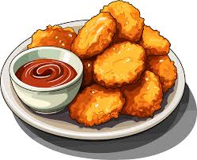

-
Nuggets

Description
A chicken nugget is a food product
consisting of a small piece of
deboned chicken meat that is
breaded or battered, then
deep-fried or baked. Developed
in the 1950s by finding a way to
make a coating adhere, chicken
nuggets have become a very popular
fast food restaurant item, and are
widely sold frozen for home use.
-
Ingredients
- 3 skinless, boneless chicken breasts
- 1 cup Italian seasoned bread crumbs
- ½ cup grated Parmesan cheese
- 1 tablespoon dried basil
- 1 teaspoon dried thyme
- 1 teaspoon salt
- ½ cup butter, melted
-
Steps
- Preheat the oven to 400 degrees F (200 degrees C).
- Cut chicken breasts into 1 1/2-inch pieces. Mix the bread crumbs, Parmesan, basil, thyme, and salt together well in a medium bowl. Put melted butter in a bowl or dish for dipping.
- Dip chicken pieces into the melted butter first, then coat with the bread crumb mixture. Place the well-coated chicken nuggets on a lightly greased cookie sheet in a single layer.
- Bake nuggets in the preheated oven until browned and chicken is cooked through, about 20 minutes.